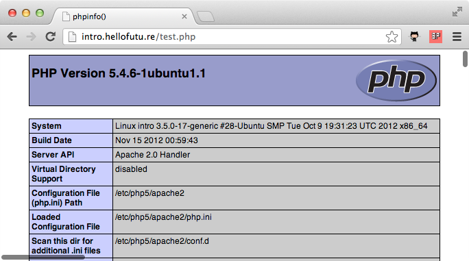
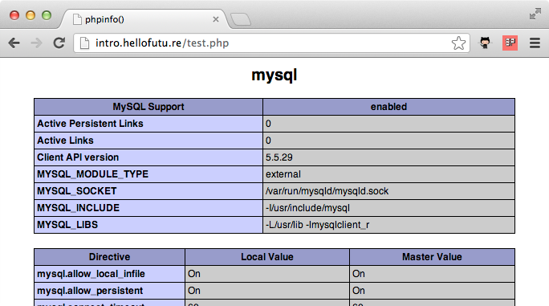

Getting Started with Chef
Learn how to configure, manage and provision cloud servers with Chef by following practical examples with real world applications.
Starting with Chef can be difficult. There are a few tricky concepts to grasp and some new terminology to learn. This work in progress book gradually introduces you to Chef without throwing you in at the deep end. You'll be shown how to configure servers with practical examples for applications large and small.
If you find any issues with this book or have any suggestions of things you'd like to change please submit an issue or pull request over at our Github page.
1. Introducing Chef
In the first chapter we'll introduce you to Chef and we'll be working over a SSH connection. There are better ways to work with Chef and we'll get to them in later chapters but things will be kept as simple as possible to start with.
The simplest way to use Chef is chef-solo. It allows you to install, configure and manage the packages required by your application without the complication of any client and server configuration. We'll start with the common scenario that you're a website developer that wants to deploy your new PHP application to a cloud web server.
Every time you have to setup a web server you have to remember loads of installation commands, edit configuration files and generally you always forget how to do something and it takes ages. Wouldn't it be nice if this was all entirely automated? With Chef we can keep our infrastructure as code alongside our applications.
So before we start, we need somewhere test our code. We'll introduce you to tools that help you manage your Chef development and testing later in the book but for now we'll just need root access to a fresh install of Ubuntu.
There are more than few providers of cloud instances but we favour Rackspace, if you sign up here we'll get some affiliate revenue that will help fund our writing of future guides. Once you've signed up, fire up an Ubuntu instance.
Of course you can install Ubuntu in a virtual machine if preferred. If you do, create a snapshot now so we can re-use a fresh installation for later examples.
Installing Chef
SSH to your vanilla Ubuntu box and run the following command to install Chef. This used to be a more involved process but thanks to the new omnibus installer it couldn't be simpler.
root@intro:~# sudo true && curl -L https://www.opscode.com/chef/install.sh | sudo bash Thank you for installing Chef!
Confirm Chef has successfully installed.
root@intro:~# chef-client -v
...
Chef: 11.4.0
Of course, your version number may be different.
Our first Chef cookbook
So, what do we need to do to get our web server up and running?
- Install and configure Apache
- Install and configure MySQL
- Install and configure PHP
- Deploy our website code to the site
How do we do that? We write our first Chef cookbook. But before we do that we should setup a file structure that will help us organise our various Chef files. Opscode, the makers of Chef provide one. They call it simply the Chef Repository.
root@intro:~# wget http://github.com/opscode/chef-repo/tarball/master root@intro:~# tar -zxf master root@intro:~# mv opscode-chef-repo* chef-repo root@intro:~# rm master
If we look inside the chef-repo directory we can see the following:
root@intro:~# cd chef-repo/ root@intro:~/chef-repo# ls certificates chefignore config cookbooks data_bags environments LICENSE Rakefile README.md roles
Our Chef cookbook should unsurprisingly reside within the cookbooks directory. We're going to call it "phpapp". We can use the command knife to help us manage our cookbooks. First we should tell knife where to find our cookbooks directory.
root@intro:~/chef-repo# mkdir .chef root@intro:~/chef-repo# echo "cookbook_path [ '/root/chef-repo/cookbooks' ]" > .chef/knife.rb
That creates a simple configuration file for knife which tells knife to use the cookbook directory inside our Chef Repository. Now we'll ask knife to create our "phpapp" cookbook.
root@intro:~/chef-repo# knife cookbook create phpapp ** Creating cookbook phpapp ** Creating README for cookbook: phpapp ** Creating CHANGELOG for cookbook: phpapp ** Creating metadata for cookbook: phpapp
So let's look at what knife has created.
root@intro:~/chef-repo# cd cookbooks/phpapp root@intro:~/chef-repo/cookbooks/phpapp# ls attributes CHANGELOG.md definitions files libraries metadata.rb providers README.md
recipes resources templates
So now we'd need write our cookbook to install and configure Apache, MySQL and PHP. How do we do that? Well, thanks to the open source nature of Chef, we don't have to. Welcome to the Opscode Community cookbook site.

Here you'll find lots of well crafted, tested and battle hardened cookbooks that will do most of the work for you. Think of them as libraries you will use inside your code. We'll start with the apache2 cookbook. There's no need to manually download it from the community site, knife has this functionality built in.
root@intro:~/chef-repo/cookbooks/phpapp# cd .. root@intro:~/chef-repo/cookbooks# knife cookbook site download apache2 Downloading apache2 from the cookbooks site at version 1.6.0 to /root/chef-repo/cookbooks/apache2-1.6.0.tar.gz Cookbook saved: /root/chef-repo/cookbooks/apache2-1.6.0.tar.gz root@intro:~/chef-repo/cookbooks# tar zxf apache2* root@intro:~/chef-repo/cookbooks# rm rm apache2*.tar.gz
Let's go back into our cookbook.
root@intro:~/chef-repo/cookbooks# cd phpapp
Open metadata.rb in your favourite text editor. Vim or nano are both available by default on Ubuntu. We suggest using nano if you're not used to Vim. So type "nano metadata.rb".
name 'phpapp' maintainer 'YOUR_COMPANY_NAME' maintainer_email 'YOUR_EMAIL' license 'All rights reserved' description 'Installs/Configures phpapp' long_description IO.read(File.join(File.dirname(__FILE__), 'README.md')) version '0.1.0' depends "apache2"
Add the line in green. This tells Chef our cookbook relies on the apache2 cookbook to function. Save the file. Then open recipes/default.rb in your text editor.
# # Cookbook Name:: phpapp # Recipe:: default # # Copyright 2013, YOUR_COMPANY_NAME # # All rights reserved - Do Not Redistribute # include_recipe "apache2"
Again add the line in green. This includes the default recipe from the apache2 cookbook in our recipe. The default apache2 recipe (which can be found in cookbooks/apache2/recipes/default.rb) installs and configures Apache for us.
Okay. Let's see if what we've got so far works! Go back to the chef-repo directory.
root@intro:~/chef-repo/cookbooks/phpapp# cd ../..
Create a new file called solo.rb in your text editor.
file_cache_path "/root/chef-solo" cookbook_path "/root/chef-repo/cookbooks"
Add the lines in green. This file configures chef-solo, telling it where to keep it's cache of files and where our cookbooks are. Save the file. Now create a file called web.json.
{
"run_list": [ "recipe[phpapp]" ]
}
Add the lines in green and we're all set!
Our first Chef run
root@intro:~/chef-repo# chef-solo -c solo.rb -j web.json
Starting Chef Client, version 11.4.0
...
Chef Client finished, 14 resources updated
We'll cut the terminal output off there. Chef gives you comprehensive information about exactly what it's done. By default, the actions it's taken are displayed in green and when it updates a template it shows you what's changed.
Now you can visit your new Apache server.

Next we'll setup MySQL. As the community site has a cookbook for MySQL, the process is similar to Apache. Again we'll ask knife to fetch the cookbook from the community site for us.
root@intro:~/chef-repo# cd cookbooks root@intro:~/chef-repo/cookbooks# knife cookbook site download mysql Downloading mysql from the cookbooks site at version 2.1.2 to /root/chef-repo/cookbooks/mysql-2.1.2.tar.gz Cookbook saved: /root/chef-repo/cookbooks/mysql-2.1.2.tar.gz root@intro:~/chef-repo/cookbooks# tar zxf mysql* root@intro:~/chef-repo/cookbooks# rm mysql-*.tar.gz
So let's install MySQL then. We want to install both the MySQL client and the server as we'll be running our application on a single instance for now. Look inside the MySQL cookbook and see exactly what we need to include in our recipe.
root@intro:~/chef-repo/cookbooks# cd mysql/recipes/ root@intro:~/chef-repo/cookbooks/mysql/recipes# ls client.rb default.rb ruby.rb server_ec2.rb server.rb
There's a client recipe and a server recipe. We'll need to include both then. Go back to our cookbook.
root@intro:~/chef-repo/cookbooks/mysql/recipes# cd ../../phpapp
Open metadata.rb in your text editor.
name 'phpapp' maintainer 'YOUR_COMPANY_NAME' maintainer_email 'YOUR_EMAIL' license 'All rights reserved' description 'Installs/Configures phpapp' long_description IO.read(File.join(File.dirname(__FILE__), 'README.md')) version '0.1.0' depends "apache2" depends "mysql"
Add the line in green and save the file. Now edit recipes/default.rb.
# # Cookbook Name:: phpapp # Recipe:: default # # Copyright 2013, YOUR_COMPANY_NAME # # All rights reserved - Do Not Redistribute # include_recipe "apache2" include_recipe "mysql::client" include_recipe "mysql::server"
Add the two lines in green and save the file. Now let's run chef-solo again!
Our second Chef run
root@intro:~/chef-repo/cookbooks/phpapp# cd ../.. root@intro:~/chef-repo# chef-solo -c solo.rb -j web.json Starting Chef Client, version 11.4.0 Compiling Cookbooks... [2013-02-11T21:47:33+00:00] ERROR: Running exception handlers [2013-02-11T21:47:33+00:00] ERROR: Exception handlers complete Chef Client failed. 0 resources updated [2013-02-11T21:47:33+00:00] FATAL: Stacktrace dumped to /root/chef-solo/chef-stacktrace.out [2013-02-11T21:47:33+00:00] FATAL: Chef::Exceptions::CookbookNotFound: Cookbook build-essential not found. If you're loading build-essential from another cookbook, make sure you configure the dependency in your metadata
Oh that's not good! We've got an error. The cookbook build-essential is not found. We haven't included it in our cookbook so it's probably required by the mysql cookbook we've just added. We know we have to specify the cookbook dependencies for our cookbook in metadata.rb, so we'll look at the metadata.rb file in the mysql cookbook.
Open cookbooks/mysql/metadata.rb in your editor.
name "mysql"
maintainer "Opscode, Inc."
maintainer_email "cookbooks@opscode.com"
license "Apache 2.0"
description "Installs and configures mysql for client or server"
long_description IO.read(File.join(File.dirname(__FILE__), 'README.md'))
version "2.1.2"
recipe "mysql", "Includes the client recipe to configure a client"
recipe "mysql::client", "Installs packages required for mysql clients using run_action magic"
recipe "mysql::server", "Installs packages required for mysql servers w/o manual intervention"
recipe "mysql::server_ec2", "Performs EC2-specific mountpoint manipulation"
%w{ debian ubuntu centos suse fedora redhat scientific amazon freebsd windows mac_os_x }.each do |os|
supports os
end
depends "openssl"
depends "build-essential"
suggests "homebrew"
suggests "windows"
There's more below but let's just concentrate on depends and suggests. The suggests entries tell Chef that some optional functionality may depend on that cookbook. We already know the depends entries specify a hard requirement. So we need to download build-essential and openssl.
There are some good tools available to help you manage cookbooks and dependences which we'll cover in later chapters but we'll just download the required cookbooks using knife for now.
root@intro:~/chef-repo# cd cookbooks root@intro:~/chef-repo/cookbooks# knife cookbook site download openssl Downloading openssl from the cookbooks site at version 1.0.0 to /root/chef-repo/cookbooks/openssl-1.0.0.tar.gz Cookbook saved: /root/chef-repo/cookbooks/openssl-1.0.0.tar.gz root@intro:~/chef-repo/cookbooks# tar zxf openssl*.tar.gz root@intro:~/chef-repo/cookbooks# rm openssl*.tar.gz root@intro:~/chef-repo/cookbooks# knife cookbook site download build-essential Downloading build-essential from the cookbooks site at version 1.3.4 to /root/chef-repo/cookbooks/build-essential-1.3.4.tar.gz Cookbook saved: /root/chef-repo/cookbooks/build-essential-1.3.4.tar.gz root@intro:~/chef-repo/cookbooks# tar zxf build-essential-*.tar.gz root@intro:~/chef-repo/cookbooks# rm build-essential-*.tar.gz
And now we've fulfilled those dependencies let's try and re-run chef-solo!
root@intro:~/chef-repo/cookbooks# cd .. root@intro:~/chef-repo# chef-solo -c solo.rb -j web.json Starting Chef Client, version 11.4.0 Compiling Cookbooks... [2013-02-12T18:44:18+00:00] WARN: Cloning resource attributes for service[apache2] from prior resource (CHEF-3694) [2013-02-12T18:44:18+00:00] WARN: Previous service[apache2]: /root/chef-repo/cookbooks/apache2/recipes/default.rb:24:in `from_file' [2013-02-12T18:44:18+00:00] WARN: Current service[apache2]: /root/chef-repo/cookbooks/apache2/recipes/default.rb:221:in `from_file' [2013-02-12T18:44:18+00:00] FATAL: You must set node['mysql']['server_debian_password'], node['mysql']['server_root_password'], node['mysql']['server_repl_password'] in chef-solo mode. For more information, see https://github.com/opscode-cookbooks/mysql#chef-solo-note
Again we have an error. But that's okay, the MySQL cookbook has told us how to fix the error. We need to define a root password for MySQL. This is an attribute. In Chef attributes are values which we use to configure our applications or platform. An attribute could be a port number for Apache. Often a sensible default is specified inside a cookbook. Such a default for a web server port would be 80. There's no sensible default MySQL password, so we need to specify one. Open web.rb.
{
mysql": {"server_root_password": "808052769e2c6d909027a2905b224bad", "server_debian_password": "569d1ed2d46870cc020fa87be83af98d", "server_repl_password": "476911180ee92a2ee5a471f33340f6f4"},
"run_list": [ "recipe[phpapp]" ]
}
Add the code in green. Let's re-run chef-solo.
root@intro:~/chef-repo# chef-solo -c solo.rb -j web.json
Starting Chef Client, version 11.4.0
...
Chef Client finished, 14 resources updated
Much more successful, we now have MySQL. Now to install PHP. You guessed it, there's a community cookbook for PHP.
root@intro:~/chef-repo# cd cookbooks/ root@intro:~/chef-repo/cookbooks# knife cookbook site download php Downloading php from the cookbooks site at version 1.1.8 to /root/chef-repo/cookbooks/php-1.1.8.tar.gz Cookbook saved: /root/chef-repo/cookbooks/php-1.1.8.tar.gz root@intro:~/chef-repo/cookbooks# tar zxf php*.tar.gz root@intro:~/chef-repo/cookbooks# rm php*.tar.gz
The php cookbook also depends on the xml cookbook, so let's grab that one.
root@intro:~/chef-repo/cookbooks# knife cookbook site download xml Downloading xml from the cookbooks site at version 1.1.2 to /root/chef-repo/cookbooks/xml-1.1.2.tar.gz Cookbook saved: /root/chef-repo/cookbooks/xml-1.1.2.tar.gz root@intro:~/chef-repo/cookbooks# tar zxf xml-*.tar.gz root@intro:~/chef-repo/cookbooks# rm xml-*.tar.gz
Next we add the new php cookbook as a dependency for our cookbook. Open phpapp/metadata.rb.
name 'phpapp'
maintainer 'YOUR_COMPANY_NAME'
maintainer_email 'YOUR_EMAIL'
license 'All rights reserved'
description 'Installs/Configures phpapp'
long_description IO.read(File.join(File.dirname(__FILE__), 'README.md'))
version '0.1.0'
depends "apache2"
depends "mysql"
depends "php"
Add the code in green. And now lets include the php recipe to our cookbook. Open phpapp/recipes/default.rb.
#
# Cookbook Name:: phpapp
# Recipe:: default
#
# Copyright 2013, YOUR_COMPANY_NAME
#
# All rights reserved - Do Not Redistribute
#
include_recipe "apache2"
include_recipe "mysql::client"
include_recipe "mysql::server"
include_recipe "php"
include_recipe "php::module_mysql"
include_recipe "apache2::mod_php5"
Add the code in green. Here we add the PHP default recipe, one to install the PHP MySQL extension and finally one to enable the Apache PHP module mod_php. And we're good to run chef-solo again to install all of those things.
root@intro:~/chef-repo/cookbooks# cd.. root@intro:~/chef-repo# chef-solo -c solo.rb -j web.json Starting Chef Client, version 11.4.0 ... Chef Client finished, 8 resources updated
So that's PHP installed. Let's confirm that by creating a test page. Open /var/www/test.php in your editor.
<?php phpinfo(); ?>
Add the code in green and save the file. Now goto http://yourserver/test.php

Scroll down and make sure the MySQL extension is installed.

We can see MySQL is installed.
Idempotence
At this point you might well be thinking all that was a lot of effort for not much reward. You could have installed that with a line similar to "apt-get install mysql-server apache2 php5 libapache2-mod-php5". What's happened behind the scenes though is that as well as installing our packages, Chef has updated all of the configuration files for each package with consistent defaults. If we bring up another server and run the same cookbooks, the same things will be installed. We can repeat the chef-solo command repeatedly and we'll end up with the same result as we did the first time we ran it. The process is idempotent; it will always produce the same result no matter how many times it is run.
Now if you were setting up a server by hand, this is where you'd manually setup a database, copy the web application code over, create a MySQL user for the website and configure virtual hosts. Instead, we'll use Chef to automate the setup of our application. This allows us to set up multiple servers and know we will always get the same results.
First we need to fetch a final few cookbooks. The git cookbook will install git so we can fetch the code for our web application. The git cookbook depends on quite a few cookbooks which we'll need even though we won't use them. These are windows, dmg, runit, chef_handler and yum.
root@intro:~/chef-repo# cd cookbooks root@intro:~/chef-repo/cookbooks# knife cookbook site download git Downloading git from the cookbooks site at version 2.3.0 to /root/chef-repo/cookbooks/git-2.3.0.tar.gz Cookbook saved: /root/chef-repo/cookbooks/git-2.3.0.tar.gz root@intro:~/chef-repo/cookbooks# tar zxf git-2.3.0.tar.gz root@intro:~/chef-repo/cookbooks# knife cookbook site download windows Downloading windows from the cookbooks site at version 1.8.4 to /root/chef-repo/windows-1.8.4.tar.gz Cookbook saved: /root/chef-repo/windows-1.8.4.tar.gz root@intro:~/chef-repo/cookbooks# tar zxf windows-1.8.4.tar.gz root@intro:~/chef-repo/cookbooks# knife cookbook site download dmg Downloading dmg from the cookbooks site at version 1.1.0 to /root/chef-repo/dmg-1.1.0.tar.gz Cookbook saved: /root/chef-repo/dmg-1.1.0.tar.gz root@intro:~/chef-repo/cookbooks# tar zxf dmg-1.1.0.tar.gz root@intro:~/chef-repo/cookbooks# knife cookbook site download runit Downloading runit from the cookbooks site at version 1.0.4 to /root/chef-repo/cookbooks/runit-1.0.4.tar.gz Cookbook saved: /root/chef-repo/cookbooks/runit-1.0.4.tar.gz root@intro:~/chef-repo/cookbooks# tar zxf runit-1.0.4.tar.gz root@intro:~/chef-repo/cookbooks# knife cookbook site download chef_handler Downloading chef_handler from the cookbooks site at version 1.1.4 to /root/chef-repo/cookbooks/chef_handler-1.1.4.tar.gz Cookbook saved: /root/chef-repo/cookbooks/chef_handler-1.1.4.tar.gz root@intro:~/chef-repo/cookbooks# tar zxf chef_handler-1.1.4.tar.gz root@intro:~/chef-repo/cookbooks# knife cookbook site download yum Downloading yum from the cookbooks site at version 2.1.0 to /root/chef-repo/cookbooks/yum-2.1.0.tar.gz Cookbook saved: /root/chef-repo/cookbooks/yum-2.1.0.tar.gz root@intro:~/chef-repo/cookbooks# tar zxf yum-2.1.0.tar.gz
The database cookbook provides resources that allow us to easily manage databases and database users. The database cookbook depends on the postgresql, xfs and aws cookbooks so we'll need those as well even though we won't be using them.
root@intro:~/chef-repo/cookbooks# knife cookbook site download database Downloading database from the cookbooks site at version 1.3.12 to /root/chef-repo/cookbooks/database-1.3.12.tar.gz Cookbook saved: /root/chef-repo/cookbooks/database-1.3.12.tar.gz root@intro:~/chef-repo/cookbooks# tar zxf atabase-1.3.12.tar.gz root@intro:~/chef-repo/cookbooks# knife cookbook site download postgresql Downloading postgresql from the cookbooks site at version 2.2.2 to /root/chef-repo/cookbooks/postgresql-2.2.2.tar.gz Cookbook saved: /root/chef-repo/cookbooks/postgresql-2.2.2.tar.gz root@intro:~/chef-repo/cookbooks# tar zxf postgresql-2.2.2.tar.gz root@intro:~/chef-repo/cookbooks# knife cookbook site download xfs Downloading xfs from the cookbooks site at version 1.1.0 to /root/chef-repo/cookbooks/xfs-1.1.0.tar.gz Cookbook saved: /root/chef-repo/cookbooks/xfs-1.1.0.tar.gz root@intro:~/chef-repo/cookbooks# tar zxf xfs-1.1.0.tar.gz root@intro:~/chef-repo/cookbooks# knife cookbook site download aws Downloading aws from the cookbooks site at version 0.100.6 to /root/chef-repo/cookbooks/aws-0.100.6.tar.gz Cookbook saved: /root/chef-repo/cookbooks/aws-0.100.6.tar.gz root@intro:~/chef-repo/cookbooks# tar zxf aws-0.100.6.tar.gz root@intro:~/chef-repo/cookbooks# rm *.tar.gz
We'll now add the new dependencies to our cookbook. Open phpapp/metadata.rb.
name 'phpapp'
maintainer 'YOUR_COMPANY_NAME'
maintainer_email 'YOUR_EMAIL'
license 'All rights reserved'
description 'Installs/Configures phpapp'
long_description IO.read(File.join(File.dirname(__FILE__), 'README.md'))
version '0.1.0'
depends "apache2"
depends "mysql"
depends "php"
depends "git"
depends "database"
Add the code in green and save the file. It's now time to write our first Chef recipe. To setup our web application we need to:
- Create a MySQL database for our application
- Create a MySQL database user for our application
- Fetch our web application code with Git
- Import database schema and any initial data
- Create a configuration file with database details and other configuration options for our web application
- Create an Apache virtualhost for our web application
Writing our recipe
A resource is an action that your recipe can perform. The template resource creates a file by expanding variables in a template. The user resource can be used to manage users. Chef ships with many other useful resources, an overview of which can be found later in the chapter Resources. The database cookbook provides the resources mysql_database which we will now use to perform the first step.
Open phpapp/recipes/default.rb
#
# Cookbook Name:: phpapp
# Recipe:: default
#
# Copyright 2013, YOUR_COMPANY_NAME
#
# All rights reserved - Do Not Redistribute
#
include_recipe "apache2"
include_recipe "mysql::client"
include_recipe "mysql::server"
include_recipe "php"
include_recipe "php::module_mysql"
include_recipe "apache2::mod_php5"
include_recipe "mysql::ruby"
mysql_database 'phpapp' do
connection ({:host => 'localhost', :username => 'root', :password => node['mysql']['server_root_password']})
action :create
end
Add the code in green but hang on a minute. We've hard-coded the name of the database name to be "phpapp". That could prevent our recipe from being reusable. Really the database name should be an attribute. Let's change our code so that's the case.
mysql_database node['phpapp']['database'] do
connection ({:host => 'localhost', :username => 'root', :password => node['mysql']['server_root_password']})
action :create
end
Replace 'phpapp' with node['phpapp']['database']. Save the file. Let's see run chef-solo again and see if our changes are successful.
root@intro:~/chef-repo/cookbooks# cd .. root@intro:~/chef-repo# chef-solo -c solo.rb -j web.json Starting Chef Client, version 11.4.0
And that's failed. Let's look at the key parts of the message we received; highlighted bellow in yellow.
NoMethodError ------------- undefined method `[]' for nil:NilClass Cookbook Trace: --------------- /root/chef-repo/cookbooks/phpapp/recipes/default.rb:17:in `from_file' Relevant File Content: ---------------------- /root/chef-repo/cookbooks/phpapp/recipes/default.rb: 10: include_recipe "apache2" 11: include_recipe "mysql::client" 12: include_recipe "mysql::server" 13: include_recipe "php" 14: include_recipe "php::module_mysql" 15: include_recipe "apache2::mod_php5" 16: 17>> mysql_database node['phpapp']['database'] do 18: connection ({:host => 'localhost', :username => 'root', :password => node['mysql']['server_root_password']}) 19: action :create 20: end 21:
The message undefined method `[]' for nil:NilClass is Ruby telling us that the attribute node['phpapp']['database'] doesn't exist. We need to define it.
Default attributes
The missing database attribute can be defined in a few places. We could define the attribute in web.json like we did with the MySQL ones but that makes our cookbook unnecessarily difficult to use. We want to provide the option to use a database called something other than phpapp but we should really provide a default.
root@intro:~/chef-repo# cd cookbooks/phpapp
We now create called "attributes/default.rb". Open it in your editor.
default["phpapp"]["database"] = "phpapp"
Add the code in green and save the file.
root@intro:~/chef-repo# chef-solo -c solo.rb -j web.json
Starting Chef Client, version 11.4.0
...
Chef Client finished, 7 resources updated
We've got a database! Let's create the database user.
root@intro:~/chef-repo# cd cookbooks/phpapp
Open recipes/default.rb.
#
# Cookbook Name:: phpapp
# Recipe:: default
#
# Copyright 2013, YOUR_COMPANY_NAME
#
# All rights reserved - Do Not Redistribute
#
include_recipe "apache2"
include_recipe "mysql::client"
include_recipe "mysql::server"
include_recipe "php"
include_recipe "php::module_mysql"
include_recipe "apache2::mod_php5"
include_recipe "mysql::ruby"
mysql_database node['phpapp']['database'] do
connection ({:host => 'localhost', :username => 'root', :password => node['mysql']['server_root_password']})
action :create
end
mysql_database_user node['phpapp']['db_username'] do
connection ({:host => 'localhost', :username => 'root', :password => node['mysql']['server_root_password']})
password node['phpapp']['db_password']
database_name node['phpapp']['database']
privileges [:select,:update,:insert,:create,:delete]
action :grant
end
Add the code in green and save the file. We'll create a default value for our web application's mysql username but not for the password. That will need to be specified in web.json. Open attributes/default.rb
default["phpapp"]["database"] = "phpapp"
default["phpapp"]["db_username"] = "phpapp"
Add the code in green and save the file.
root@intro:~/chef-repo/cookbooks/phpapp# cd ../..
Open web.json.
{
"mysql": {"server_root_password": "808052769e2c6d909027a2905b224bad", "server_debian_password": "569d1ed2d46870cc020fa87be83af98d", "server_repl_password": "476911180ee92a2ee5a471f33340f6f4"},
"phpapp": {"db_password": "212b09752d173876a84d374333ae1ffe"},
"run_list": [ "recipe[phpapp]" ]
}
Add the code in green and save the file. Let's check our recipe still works.
root@intro:~/chef-repo# chef-solo -c solo.rb -j web.json
Starting Chef Client, version 11.4.0
...
Chef Client finished, 2 resources updated
So we now have a MySQL database user for our app. Now we need to fetch our code.
*** Chapter to be completed ***